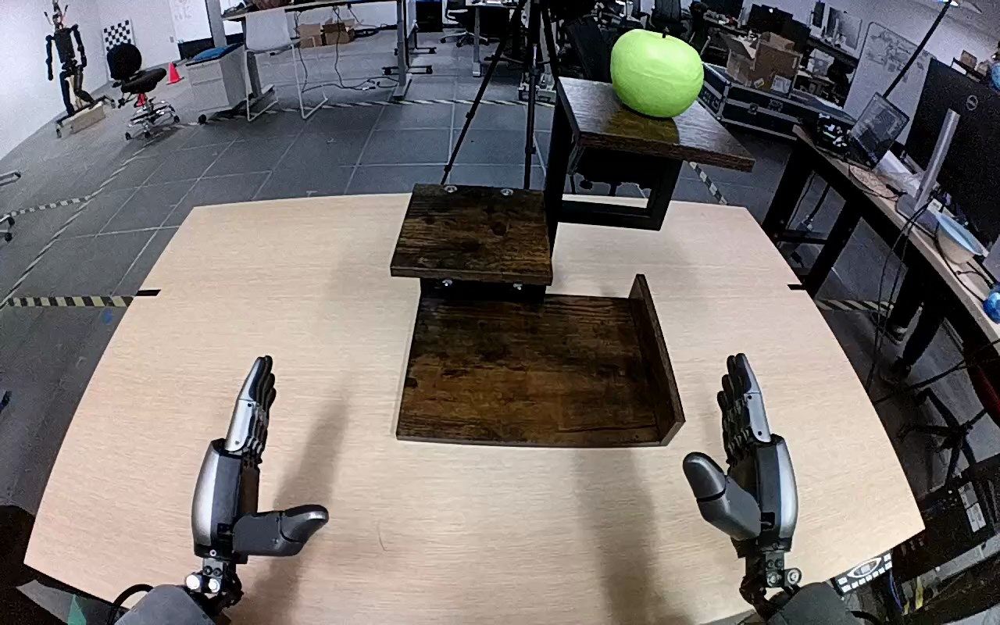

NVIDIA GR1 · 45
Video 45

Visual review action_review.json
{
"prompt_protocol": "humanoid_action_v1",
"prompt_provenance": "visually_authored_from_video_and_initial_frame",
"reviewed_contact_sheets": [
"sheet_001.jpg"
],
"inspected_frame_stride": 2,
"inspected_sampled_frame_count": 60,
"initial_scene": "Robot-facing workspace view looking along both forearms toward a three-tier wooden shelf. A single green apple rests on the highest tier; both hands are initially open below the shelf.",
"observed_sequence": [
{
"source_frame_interval": [
0,
11
],
"action": "Both hands are open in front of the shelf; the green apple is stationary on the highest tier.",
"confidence": "high"
},
{
"source_frame_interval": [
12,
39
],
"action": "The right arm rises toward the top tier and positions the open right hand around the green apple. The left hand remains low and does not engage.",
"confidence": "high"
},
{
"source_frame_interval": [
40,
55
],
"action": "The right fingers and opposing thumb close around the apple while it remains on the top tier.",
"confidence": "high"
},
{
"source_frame_interval": [
56,
63
],
"action": "The right hand lifts the gripped apple free of the top tier.",
"confidence": "high"
},
{
"source_frame_interval": [
64,
105
],
"action": "The right arm carries the apple downward and toward the bottom tier, lowering it onto the bottom wooden surface.",
"confidence": "high"
},
{
"source_frame_interval": [
106,
119
],
"action": "The right hand opens around the apple, spreading its thumb and fingers; the apple remains resting on the bottom tier. The hand has not fully withdrawn when the video ends.",
"confidence": "high"
}
],
"arm_hand_roles": {
"right": "Sole manipulating hand: closes around the apple, lifts it from the top tier, carries and lowers it to the bottom tier, then opens to release it.",
"left": "Remains open and low; does not support the apple or shelf and does not assist the manipulation.",
"coordination": "Single-hand manipulation; no transfer or shared grasp. A person walks into the background but does not interact with the robot or apple."
},
"anatomical_side_evidence": "The initial view looks forward along the robot's two forearms. The screen-right hand is continuous with the right forearm and has its thumb on its inward, screen-left side, while the opposite hand has its thumb inward on screen-right. These mirrored hand anatomies in the robot-facing view support identifying the active hand as anatomical right, consistent with the source instruction; naming is not based solely on screen position.",
"terminal_state": "The apple rests on the bottom tier. The right thumb is spread away and the fingers are opening beside/above the apple, establishing release without a complete arm withdrawal. The left hand stays open below the shelf.",
"uncertainties": [
"Exact first frame of bottom-tier surface contact is partially occluded by the right hand. Some final fingertips overlap the apple in projection, but the final open hand and stable apple on the shelf support release; complete withdrawal is not shown."
],
"annotation_discrepancies": [],
"evidence_frame_indices": [
0,
40,
62,
90,
106,
119
],
"inspection_coverage": "Viewed the full contact sheet covering every second source frame from 0 through 118 (60 samples), plus native source initial PNG and native grasp/lift/placement/release/final frames 40, 62, 90, 106, 119.",
"selected_execution_status": "success",
"video_id": "45",
"dataset": "NVIDIA_GR1_100",
"dedicated_review_agent": "review_gr1_45",
"review_source_video": "NVIDIA_GR1_100/45/original/original.mp4",
"source_frame_count": 120,
"source_fps": 20.0,
"native_detail_frames": [
40,
62,
90,
106,
119
],
"world_model_prompt": "The robot grasps the green apple on the wooden shelf's top tier with its right hand and lifts it clear. It carries the apple downward to the bottom tier, sets it on the wooden surface, and opens its hand to leave the apple resting there. Keep the camera fixed; preserve robot geometry, physically valid joint motion, and normal gripper opening and closing.",
"original_task_instruction": "Use the right hand to pick up green apple from top tier of wooden shelf to bottom tier of wooden shelf.",
"selected_segment": {
"start_frame": 0,
"end_frame_exclusive": 120,
"reason": "Complete original single-task reference; no cropping or trimming requested."
},
"source_video_sha256": "8863f331c87b11bdb67889669c7d50a23d98446b284a9a54e1e9b72908759bfe",
"review_completed_at": "2026-10-13T18:07:15.523956+00:00"
}